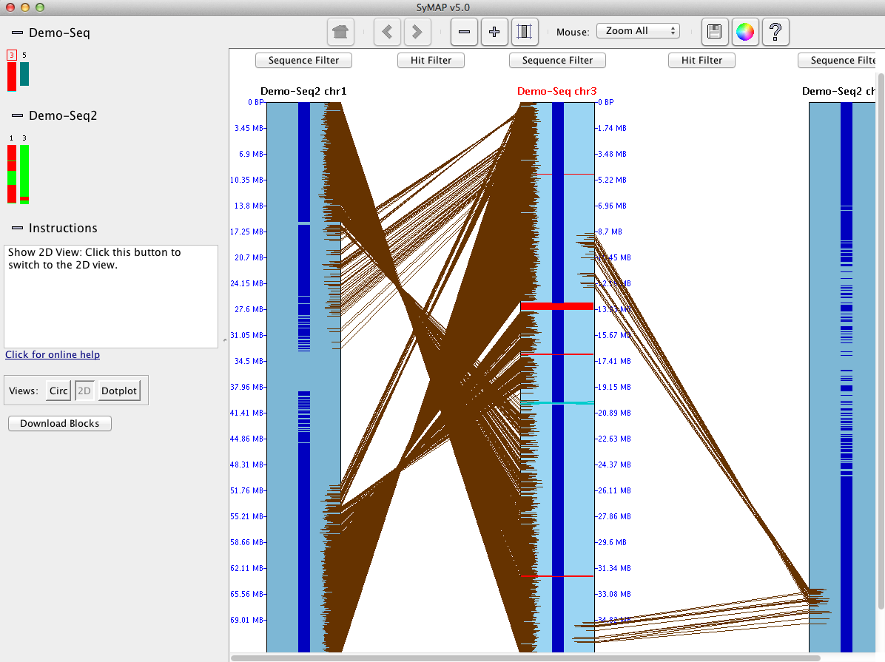
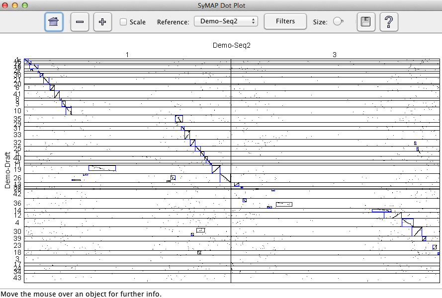
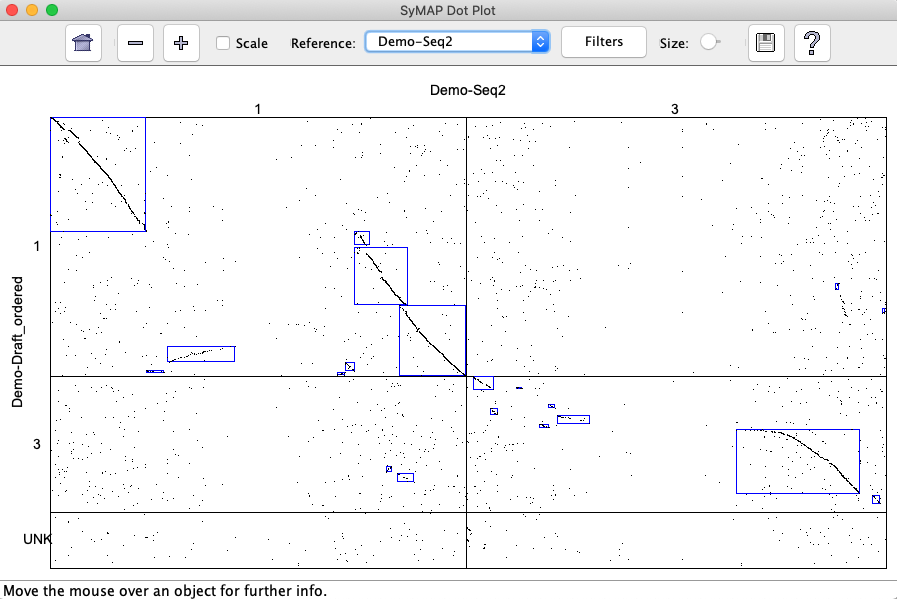

|
|
SyMAP Demos | ||||||||||||||||||||||||||||||||||||||||
| |||||||||||||||||||||||||||||||||||||||||
Querying the Demo
|
|||||||||||||||||||||||||||||||||||||||||
| This document shows the different views for the Demo-Seq to Demo-Seq2 alignment. When synteny has been computed for the demo, the table will have a checkbox, signifying that the synteny is available for viewing. Click the cell again which will enable the viewing buttons, e.g "Dot Plot". |

|
| Click "Dot Plot" and you will see the dot plot shown here. By clicking and/or selecting regions you can zoom into certain regions and bring up detailed views of the alignments. The Help button (question mark) provides full information on the functions. |

|
|
Return to the Manager, and click the "Chromosome Explorer"
button. This brings up the Explorer, shown at right.
Here you can pick different sets of chromosomes, using the small icons at left, and see them in different views. At first you only see the reference chromosome, which is initially chr3 from Demo-Seq (the reference has a red box around its number). Click on the icons for Demo-Seq2 chr1 and chr3, to see the Circos-style3 view shown on the right. The ribbons represent synteny blocks. |

|
| Click the 2D button to see a side-by-side view of the same chromosomes. Note that the reference is in the middle. Brown lines show the individual anchors. |  |
|
Selecting a region on one of the sequence tracks using the
mouse zooms to that region.
Now the annotation icons (blue) for individual genes can be seen in the center of each sequence track. If you zoom in even closer, then you can click the "Sequence Filter" button and the top of a sequence track (or right click in the sequence), and check "Show Descriptions for Annotations", and you will see the annotation text for each gene. |

|
|
Returning to the Manager, click the "SyMAP Queries" button. This brings up
the SyMAP Query window in Overview mode. Click the "Query Setup" option
on the left-hand side and you will see the Query Setup window:
The query does two basic things:
Enter "glycosyl" for the "Annotation String Search" and press "Do Search". |
|
|
55 results are returned. Click the "PgFSize" column header to sort by this column, giving the table at right: Each row is an anchor connecting two of the chromosomes. At the top of the table are 7 anchors grouped into a putative family (PgeneF=25 in the image, but it may be numbered differently when you run it). The rows with a non-empty "BlockNum" are anchors involved in synteny blocks. You could restrict the query to only these anchors, if desired. Synteny anchors are more likely to represent a true ancestral relationship; however, synteny blocks can not always be detected in sparser regions. If you query with more than two species, you can ask interesting questions such as "show me the glycosyl-related gene families which are present in species A and B but not in species C". |

|
{kind=link}
{kind=link}
3D view
If you have the Java 3D libraries installed, then you can run "symap3D" instead of "symap".{kind=link}
Self-synteny of Demo-Seq
| Demo-Seq has been run against itself, resulting in the Dot Plot shown on the right. There are a few off-diagonal blocks, which indicate some repetitive-ness. |
{kind=link}
Demo-Draft to Demo-Seq2
| The Demo-draft was run against the Demo-Seq2 with its "order_against" parameter set to Demo_Seq2. The resulting dot plot is shown on the right. Note that the 43 contigs are ordered, but still fragmented. |  |
| When the ordering algorithm is run, it also creates a new project called "Demo-Draft_ordered", where the 43 contigs are written into three chromosomes; the first two correspond to chr1 and chr3 of Demo_Seq2, and chr0 contains the contigs that do not align. The Demo-Draft_ordered and Demo_Seq2 were aligned, resulting in the the dot plot will appear as shown on the right. |  |
|
The Demo_Draft was created from the Demo_Seq, with sequence reversal and some other changes.
In the snapshot on the right, the blocks of the Demo_Seq-to-Demo_Seq2 is shown next to
the blocks of Demo_Draft_ordered-to-Demo_Seq2 is shown on the right.
Note that they major blocks are the same, as they should be. |
{kind=link}
{kind=link}
{kind=link}
| Email Comments To: symap@agcol.arizona.edu |